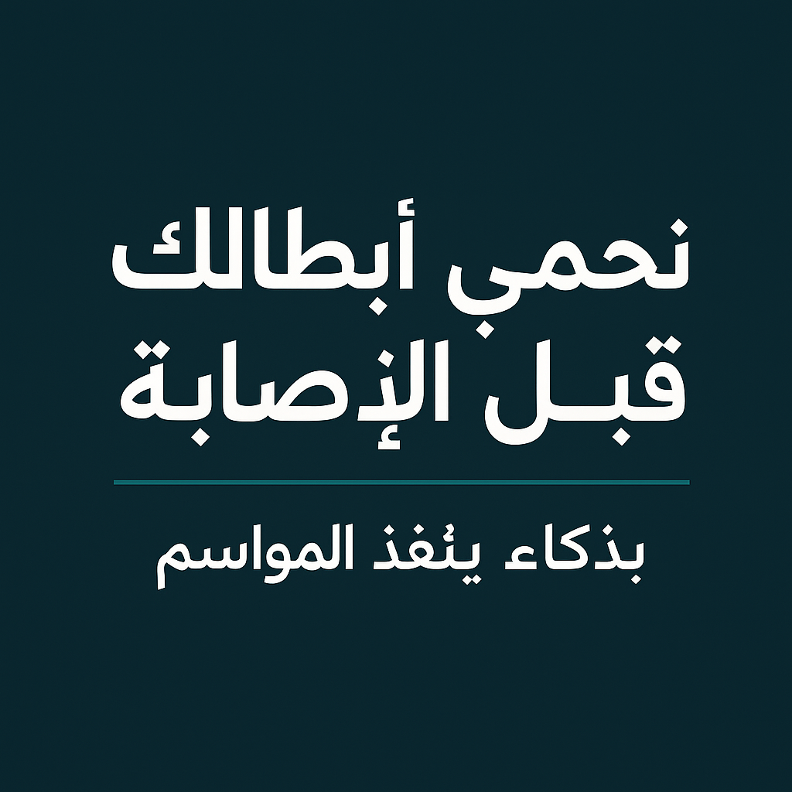

الرئيسية
لوحة التحكم
اللاعبين
المؤشرات الحيوية
التدريبات
التقارير الطبية
الإشعارات
فريق التطوير
ر
ربى أحمد
مطورة
و
وعد محمد
مصممة
ع
عامر المطيري
محلل بيانات
لوحة تحليل وتنبؤ إصابات اللاعبين
تحديث البيانات
تصدير التقرير
الفترة الزمنية:
آخر 7 أيام
آخر 14 يوم
آخر 30 يوم
آخر 90 يوم
الفريق:
جميع الفرق
الفريق الأول
فريق الشباب
فريق الناشئين
لاعبين تحت المراقبة
28
3 منذ الأسبوع الماضي
إصابات تم تجنبها
12
4 منذ الأسبوع الماضي
إصابات متوقعة
3
1 منذ الأسبوع الماضي
مؤشر خطر الإصابة
27%
5% منذ الأسبوع الماضي
تحليل مؤشر خطر الإصابة على مدار الوقت
الأنشطة والتنبيهات
تم اكتشاف مؤشر خطر مرتفع (78%) لدى محمد عبدالله في منطقة الركبة اليمنى
منذ 35 دقيقة
ارتفاع في مؤشر خطر الإصابة العام للفريق بنسبة 5% مقارنة بالأسبوع الماضي
منذ ساعتين
تم تحديث بيانات المؤشرات الحيوية لجميع اللاعبين
منذ 3 ساعات
تم تجنب 4 إصابات محتملة خلال الأسبوع الماضي بفضل الإجراءات الوقائية
منذ يوم واحد
التوصيات والإجراءات
تخفيف حمل التدريب لمحمد عبدالله
عالي
يوصى بتخفيض حمل التدريب بنسبة 40% لمدة 3 أيام مع التركيز على تمارين التقوية الخاصة بالركبة اليمنى وتجنب تمارين القفز والتسارع العالي.
تطبيق
تأجيل
جلسة علاج طبيعي لخالد سعيد
متوسط
يوصى بإجراء جلسة علاج طبيعي مكثفة للكاحل الأيسر مع تطبيق بروتوكول RICE (راحة، ثلج، ضغط، رفع) لمدة 48 ساعة.
تطبيق
تأجيل
تعديل برنامج التدريب الأسبوعي
متوسط
يوصى بتعديل برنامج التدريب الأسبوعي للفريق لتقليل الحمل التراكمي مع إضافة يوم راحة إضافي وزيادة فترات الاستشفاء بين التمارين عالية الكثافة.
تطبيق
تأجيل
مراقبة مكثفة لجودة النوم
منخفض
يوصى بمراقبة مكثفة لجودة النوم لجميع اللاعبين مع التركيز على تحسين روتين ما قبل النوم وتقليل استخدام الأجهزة الإلكترونية قبل النوم بساعتين.
تطبيق
تأجيل
توزيع أنواع الإصابات المتوقعة
مناطق الإصابة الأكثر شيوعاً
صحة النظام
واجهة API
99%
مستقرة
نظام التنبؤ
85%
تحديث متاح
قاعدة البيانات
100%
متزامنة
أجهزة الاستشعار
98%
28/30 متصل
المؤشرات الحيوية للاعبين
معدل ضربات القلب
72 نبضة/دقيقة
طبيعي
مستوى الإجهاد
45%
متوسط
جودة النوم
68%
متوسط
مؤشر الاستشفاء
75%
جيد
تحليل حمل التدريب
حمل التدريب الأسبوعي
نسبة الحادة:المزمنة
1.2
مؤشر التعب
320
اللاعبين الأكثر عرضة للإصابة
م
محمد عبدالله
مهاجم
مؤشر الخطر
78%
العمر
26 سنة
الوزن
78 كجم
الطول
182 سم
تاريخ الإصابات
3 إصابات
منطقة الخطر
الركبة اليمنى
عرض تفصيلي
توصية
خ
خالد سعيد
وسط
مؤشر الخطر
52%
العمر
24 سنة
الوزن
75 كجم
الطول
178 سم
تاريخ الإصابات
2 إصابات
منطقة الخطر
كاحل أيسر
عرض تفصيلي
توصية
ف
فهد العتيبي
مدافع
مؤشر الخطر
45%
العمر
28 سنة
الوزن
82 كجم
الطول
185 سم
تاريخ الإصابات
1 إصابة
منطقة الخطر
عضلات الفخذ
عرض تفصيلي
توصية
تحليلات متقدمة
أداء نموذج التنبؤ بالإصابات
مساهمة عوامل الخطر
مقارنة مؤشرات الفرق
تحليل موسمي
اتجاهات الإصابات الموسمية
تأثير كثافة المباريات
تحليل الاستشفاء
مؤشرات الاستشفاء
تأثير جودة النوم